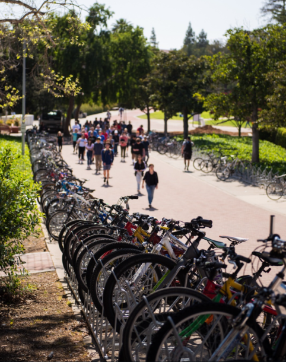
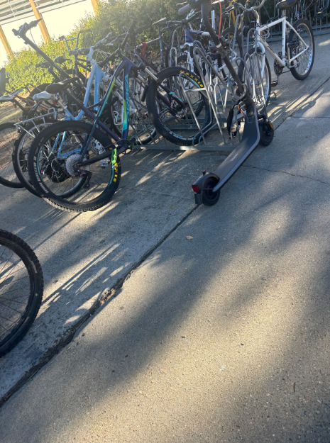

Proposed Solutions
Creation of Infrastructure
In order to identify the correct type of safety measure for each location, we turned to the Californian Highway Design Manual. To warrant a Class I bike lane, it is recommended that these facilities be used in areas frequented by high-speed commuters or where interactions with vehicles or pedestrians should be minimized (California Department of Transportation, 2020). Among the listed examples of such areas are school campuses. Currently, within Cal Poly’s borders only Class II bikeways and shared roadways can be found, with no cycling infrastructure providing full separation.
Looking at locations on campus that receive heavy traffic, there are several that would benefit from the creation of a Class I bike lane. Locations such as the promenade along Building 1901 and areas around the Kennedy Library see high volumes of pedestrian and cyclist traffic, yet have few measures to protect against collisions and were cited as some of the most dangerous in the survey (Medury et al., 2019).
Cost of Creation
The cost of creating such a bike lane can be estimated by comparing the needed length to cost estimates created by Portland State University. The study looks at labor and material costs near and around the university to provide its estimates, meaning it will not be perfect. In fact, the average hourly wage of a construction worker in San Luis Obispo is $49, whereas in Portland it is $27, meaning estimates need an 81% adjustment for higher labor costs (ZipRecruiter, n.d.; Dill, 2013).
Per foot, the cost of a two-way raised “cycling track” (Class I bikeway) is $188 according to Portland-based estimates (Dill, 2013). Applying the 81% increase for labour shows that it would cost approximately $340 per foot of Class I bikeway constructed in San Luis Obispo County. To rebuild a 500-foot section along the promenade, it would cost an estimated $170,000, including demolition and construction.
While this may seem like a large number to an individual, for an institution like Cal Poly or the County of San Luis Obispo it is a reasonable amount for an infrastructure overhaul—less than one-fiftieth of a percent of the university’s annual budget (Cal Poly Budget Office, 2024). In the 2023–2024 season, Transportation and Parking Services made $949,000 after operating and maintenance expenditures. Being responsible for transit and safety on campus, this department could use a portion of that surplus to build an estimated 2,800 feet—about half a mile—of bike lanes on campus to enhance safety (Cal Poly Budget Office, 2024).
Commuter Safety
For commuters riding to and from campus, the challenge is even greater because there are many different routes that people take. A satellite view of the region shows that the majority of the town’s population, including students, lives in an area stretching from the southeast to the west when centered on campus. Major thoroughfares in these areas lack safe bike lanes; many provide only Class II lanes and some are shared routes (Bike Crash Mapper, n.d.).
To provide better safety along these routes, Class I bike lanes would both meet the state’s recommendations in the Highway Design Manual and see enough use to justify the cost (California Department of Transportation, 2020). A partial example exists on Chorro Street, where a Class I bike lane runs almost the entire length from its intersection with Foothill Boulevard to downtown. Using the same cost estimates as for the campus bikeway, covering each major commuter street with a mile of Class I infrastructure would cost about $5.4 million in taxpayer dollars (Dill, 2013).
With such a large price tag, implementation would likely need to occur in stages, starting with the most dangerous sections according to existing crash and near-miss reports (Medury et al., 2019). This phased approach would allow the city and university to prioritize areas where improvements would have the greatest impact on safety.
Increasing Visibility of Crashes
Recent research points to concrete ways universities and cities can collect better data on bicycle incidents when deciding where to create more bike infrastructure. One promising approach is to bypass police reports altogether, letting people who walk and bike record incidents directly. Aditya Medury and colleagues tested this idea around several university campuses using a crowdsourcing platform where users logged crashes and near-misses on a map (Medury et al., 2019).
Their study showed that this method captured many incidents that never appeared in official police statistics, especially minor collisions and falls that still indicate dangerous locations (Medury et al., 2019). A system like this at Cal Poly—whether as a campus web form or mobile app—could quickly reveal “hotspots” where students regularly experience conflicts, giving engineers and planners the insight they need to make informed decisions on where to build new infrastructure first.
Word count: 816